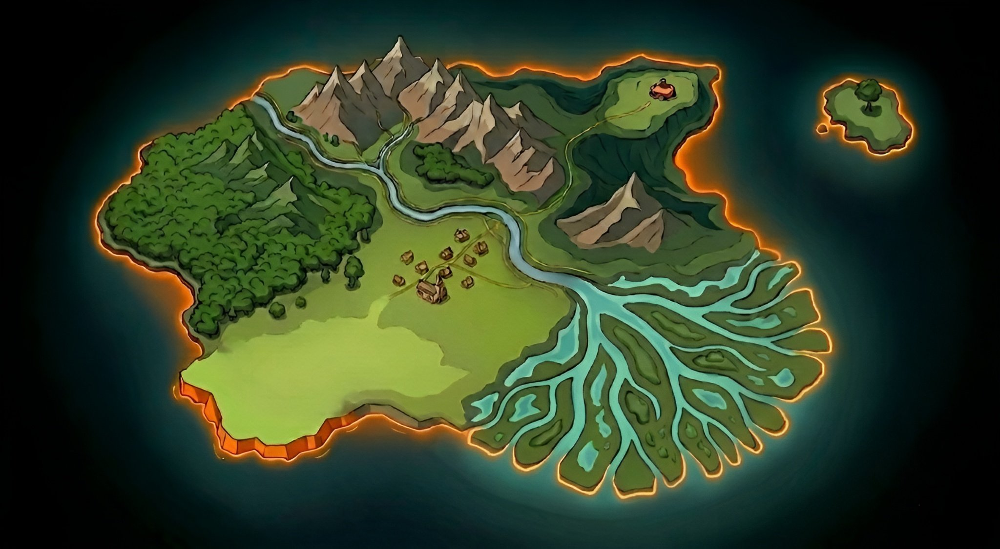

PAUSE
IA
Carte
Comprendre
Ressources

Forêt des blogs
Monts des newsletters
Village de la sécurité
Plaine militante
Rives des podcasts
Delta des vidéos
Avant-poste des prédictions
Île des ressources
Molette : zoom · Glisser : déplacer